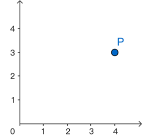

写在前面
仿射变换（affine transformation）是线性代数和几何之间非常实用的一座桥。它既可以解释“换坐标系后为什么同一个点会有不同坐标”，也可以解释图像处理中常见的平移、旋转、缩放、错切、投影近似和椭圆生成。理解仿射变换的关键不是记公式，而是把三件事分清：
- 点本身是几何对象，坐标只是它在某个坐标系下的表示。
- 矩阵描述的是“基向量如何被送到新的方向和尺度”。
- 仿射变换保持直线、平行性和线段比例，但通常不保持长度、角度和圆。
本文从最基础的坐标和矩阵讲起，然后推到直线、面积、圆锥曲线和实际编程。目标是：读完之后能把仿射变换用于推导，也能把它写进代码。
1. 坐标：点不变，表示会变
1.1 坐标依赖于基底
在平面直角坐标系 $xOy$ 中，点 $P=(4,3)$ 通常被理解为：从原点出发，沿 $x$ 轴正方向走 4 个单位，再沿 $y$ 轴正方向走 3 个单位。

用向量语言写，若 $\vec{i},\vec{j}$ 是标准正交基，则
$$ \overrightarrow{OP}=4\vec{i}+3\vec{j}. $$如果换一组基底，例如
$$ \vec{i}^{\prime}=2\vec{i},\qquad \vec{j}^{\prime}=\frac12\vec{j}, $$则同一个向量也可以写成
$$ \overrightarrow{OP}=2\vec{i}^{\prime}+6\vec{j}^{\prime}. $$所以同一个点在新基底下的坐标变成 $(2,6)$。这不是点移动了，而是表示方式变了。很多几何问题容易混乱，就是因为把“点的运动”和“坐标表示的改变”混在一起。
1.2 主动变换与被动变换
理解仿射变换时，建议区分两种视角：
- 主动变换：点真的被送到另一个位置。例如把图形旋转 30 度。
- 被动变换：点不动，只是观察它的坐标系变了。例如把坐标轴旋转 30 度。
两者公式很像，但矩阵方向往往相反。工程实践中，大多数图形库采用主动变换：给定点坐标 $x$，计算变换后的点 $x^{\prime}$。数学推导中，换基和坐标变换经常采用被动视角。写代码时必须确认自己使用的是列向量约定还是行向量约定，否则旋转方向、矩阵乘法顺序都会出错。
2. 线性方程组与行列式
2.1 二阶行列式的几何意义
二阶矩阵
$$ A= \begin{pmatrix} a & b \\ c & d \end{pmatrix} $$的行列式为
$$ \det(A)=ad-bc. $$它的几何意义是面积缩放因子。若两个基向量张成的平行四边形原面积为 1，经过矩阵 $A$ 变换后面积变成 $|\det(A)|$。符号则表示方向是否翻转：$\det(A)>0$ 保持方向，$\det(A)<0$ 翻转方向，$\det(A)=0$ 会把平面压扁到一条线或一个点。
这一点非常重要：仿射变换下长度和角度可能变化，但面积会统一乘以同一个因子 $|\det(A)|$。
2.2 线性方程组与可逆性
考虑线性方程组
$$ \begin{cases} a_{11}x+a_{12}y=b_1,\\ a_{21}x+a_{22}y=b_2. \end{cases} $$写成矩阵形式为
$$ A\begin{bmatrix}x \\ y\end{bmatrix} = \begin{bmatrix}b_1 \\ b_2\end{bmatrix}, \qquad A= \begin{bmatrix} a_{11} & a_{12}\\ a_{21} & a_{22} \end{bmatrix}. $$当
$$ \det(A)=a_{11}a_{22}-a_{12}a_{21}\neq 0 $$时，方程组有唯一解。几何上，这说明两条直线有唯一交点，也说明矩阵 $A$ 没有把平面压扁，因此可以反向恢复坐标。
例如，用非标准基底
$$ \vec{i}=(1,2),\qquad \vec{j}=(3,4) $$表示点 $P=(5,10)$，需要解
$$ x\vec{i}+y\vec{j}=\overrightarrow{OP}. $$展开得到
$$ \begin{cases} x+3y=5,\\ 2x+4y=10. \end{cases} $$解得 $(x,y)=(5,0)$。这说明 $P$ 正好在 $\vec{i}$ 方向上走 5 个单位即可到达。
3. 什么是仿射变换
3.1 定义
二维仿射变换可以写成
$$ T(x)=Ax+b, $$其中 $A$ 是 $2\times2$ 矩阵，$b$ 是二维平移向量。若写成坐标形式：
$$ \begin{bmatrix} x^{\prime} \\ y^{\prime} \end{bmatrix} = \begin{bmatrix} a_{11} & a_{12} \\ a_{21} & a_{22} \end{bmatrix} \begin{bmatrix} x \\ y \end{bmatrix} + \begin{bmatrix} t_x \\ t_y \end{bmatrix}. $$线性变换只能描述旋转、缩放、错切、反射等“固定原点”的操作；仿射变换在线性变换后增加平移，因此可以描述更完整的平面图形变换。
3.2 齐次坐标
为了把平移也写成矩阵乘法，可以引入齐次坐标：
$$ \begin{bmatrix} x^{\prime} \\ y^{\prime} \\ 1 \end{bmatrix} = \begin{bmatrix} a_{11} & a_{12} & t_x \\ a_{21} & a_{22} & t_y \\ 0 & 0 & 1 \end{bmatrix} \begin{bmatrix} x \\ y \\ 1 \end{bmatrix}. $$这在计算机图形学中非常常见，因为多个变换可以直接通过矩阵相乘组合起来。例如先缩放、再旋转、再平移，可以写成一个矩阵：
$$ T = T_{\text{translate}}T_{\text{rotate}}T_{\text{scale}}. $$注意矩阵乘法一般不交换，先旋转后平移和先平移后旋转不是同一个操作。
4. 常见仿射变换
4.1 缩放
缩放矩阵为
$$ A= \begin{pmatrix} s_x & 0\\ 0 & s_y \end{pmatrix}. $$若 $s_x=s_y$，图形等比例缩放；若 $s_x\neq s_y$，圆会变成椭圆。面积缩放因子为
$$ |\det(A)|=|s_xs_y|. $$4.2 旋转
采用列向量约定时，逆时针旋转 $\theta$ 的矩阵为
$$ R(\theta)= \begin{pmatrix} \cos\theta & -\sin\theta\\ \sin\theta & \cos\theta \end{pmatrix}. $$旋转矩阵满足
$$ R^\top R=I,\qquad \det(R)=1. $$因此旋转保持长度、角度和面积，是一种特殊的仿射变换。
4.3 错切
错切矩阵可以写成
$$ A= \begin{pmatrix} 1 & k\\ 0 & 1 \end{pmatrix}. $$它会把竖直方向保持不变，把 $x$ 坐标按 $y$ 的大小平移。错切不保持角度，但 $\det(A)=1$，所以保持面积。
4.4 平移
平移为
$$ T(x)=x+b. $$平移不改变图形形状、面积、长度和角度，但它不是线性变换，因为 $T(0)\neq0$。这就是为什么仿射变换比线性变换多一个平移项。
5. 仿射变换保持什么
5.1 直线仍然是直线
设直线参数形式为
$$ x(t)=p+t v. $$经过仿射变换 $T(x)=Ax+b$ 后，
$$ T(x(t))=A(p+tv)+b=(Ap+b)+t(Av). $$这仍然是参数 $t$ 的一次表达式，所以直线会变成直线。若 $A$ 可逆，非退化直线不会被压成点。
5.2 平行性保持
两条平行直线方向向量相同或成比例。若方向向量分别为 $v$ 和 $\lambda v$，变换后为 $Av$ 和 $A(\lambda v)=\lambda Av$，仍然成比例。因此仿射变换保持平行性。
5.3 线段比例保持
若点 $C$ 在线段 $AB$ 上，且
$$ C=(1-t)A+tB, $$经过仿射变换后：
$$ T(C)=(1-t)T(A)+tT(B). $$所以中点仍然是中点，三等分点仍然是三等分点。这个性质在计算机视觉和图形插值中很有用。
5.4 面积按行列式统一缩放
若一个区域 $S$ 经过线性部分 $A$ 变换，则面积满足
$$ \operatorname{Area}(T(S))=|\det(A)|\operatorname{Area}(S). $$因此两个区域的面积比会保持不变：
$$ \frac{\operatorname{Area}(T(S_1))}{\operatorname{Area}(T(S_2))}= \frac{\operatorname{Area}(S_1)}{\operatorname{Area}(S_2)}. $$仿射几何关注的正是这些不会随仿射变换改变的性质。
6. 直线方程如何变换
6.1 用法向量表示直线
直线可以写成
$$ n^\top x+c=0, $$其中 $n=(A,B)^\top$ 是法向量，$c=C$，对应常见形式
$$ Ax+By+C=0. $$若点经过仿射变换
$$ x^{\prime}=Mx+b, $$且 $M$ 可逆，则
$$ x=M^{-1}(x^{\prime}-b). $$代回直线方程：
$$ n^\top M^{-1}(x^{\prime}-b)+c=0. $$整理可得新直线：
$$ (M^{-\top}n)^\top x^{\prime} + c - n^\top M^{-1}b=0. $$所以法向量按 $M^{-\top}$ 变换，而不是按 $M$ 直接变换。这一点在图形学中也会出现：法向量的变换通常使用 inverse-transpose matrix。
6.2 实用检查
如果只变换点，用 $x^{\prime}=Mx+b$；如果变换直线或平面法向量，要用 $M^{-\top}$。这两者不能混用。一个简单测试是：变换前点在直线上，变换后点也必须满足新直线方程。
7. 圆、椭圆与切线
7.1 椭圆可以看成圆的仿射像
单位圆为
$$ u^2+v^2=1. $$经过缩放
$$ x=au,\qquad y=bv $$后得到
$$ \frac{x^2}{a^2}+\frac{y^2}{b^2}=1. $$因此椭圆可以看作单位圆在两个方向上不同尺度缩放后的结果。面积也立即得到：
$$ S_{\text{ellipse}}=|\det(A)|S_{\text{circle}}=ab\pi. $$7.2 椭圆切线
单位圆上点 $(u_0,v_0)$ 的切线为
$$ u_0u+v_0v=1. $$令
$$ u=\frac{x}{a},\qquad v=\frac{y}{b}, $$且椭圆上对应点为 $(x_0,y_0)=(au_0,bv_0)$，则切线变成
$$ \frac{x_0x}{a^2}+\frac{y_0y}{b^2}=1. $$这比直接对椭圆方程求导更能说明几何来源：椭圆的切线关系来自圆的切线关系，再经过仿射变换得到。
7.3 圆锥曲线的统一视角
圆、椭圆、抛物线和双曲线都可以用二次型描述：
$$ x^\top Qx+q^\top x+c=0. $$仿射变换会改变 $Q,q,c$，但曲线的退化性、相交关系、切线关系等可以通过矩阵形式统一处理。计算机视觉中的图像配准、平面单应、二次曲线拟合都大量使用这种写法。
8. 编程中的仿射变换
8.1 用 NumPy 变换点集
下面采用列向量约定，但为了方便批量计算，代码中把点集存成 $N\times2$，最后使用右乘转置：
|
|
需要注意两点：
- 若点按行存储，使用
points @ A.T + t。 - 若点按列存储，使用
A @ points + t。
两种写法都可以，但不能在同一个项目里混用。
8.2 变换图像时的反向采样
图像处理中，若直接把原图每个像素 $x$ 映射到目标位置 $x^{\prime}=Ax+b$，目标图可能出现空洞。因此实际图像 warp 通常采用反向采样：
$$ x=A^{-1}(x^{\prime}-b). $$也就是遍历目标图每个像素，反查它在原图中的位置，再用最近邻、双线性或双三次插值取值。OpenCV、Pillow、skimage 等库基本都采用这个思路。
8.3 调试仿射变换的清单
实际写代码时，可以按下面顺序排查：
- 明确使用行向量还是列向量。
- 明确旋转角度单位是度还是弧度。
- 明确坐标系 $y$ 轴向上还是向下。图像坐标通常 $y$ 轴向下。
- 检查矩阵乘法顺序。先做的变换通常离点更近。
- 检查 $\det(A)$ 是否接近 0，避免不可逆或数值不稳定。
- 若变换法向量，使用 $A^{-\top}$。
9. 小结
仿射变换可以概括为
$$ T(x)=Ax+b. $$它保持直线、平行性、线段比例和面积比，但不一定保持长度、角度和圆。行列式给出面积缩放因子，逆矩阵负责把目标坐标反查回原坐标，齐次坐标则让平移和线性部分统一成一个矩阵。
从学习路线看，仿射变换最值得掌握的是三种能力：看懂公式里的几何含义，能从几何问题写出矩阵，能在代码中稳定地实现和调试。掌握这三点之后，椭圆、图像变换、相机几何和图形渲染中的很多公式都会变得更自然。
参考文献
[1] Gilbert Strang. Introduction to Linear Algebra. Wellesley-Cambridge Press, 2016.
[2] Marcel Berger. Geometry I. Springer, 1987.
[3] H. S. M. Coxeter. Introduction to Geometry. Wiley, 1969.
[4] Richard Hartley, Andrew Zisserman. Multiple View Geometry in Computer Vision. Cambridge University Press, 2004.
[5] Richard Szeliski. Computer Vision: Algorithms and Applications. Springer, 2022.
[6] John D. Foley, Andries van Dam, Steven K. Feiner, John F. Hughes. Computer Graphics: Principles and Practice. Addison-Wesley, 1996.